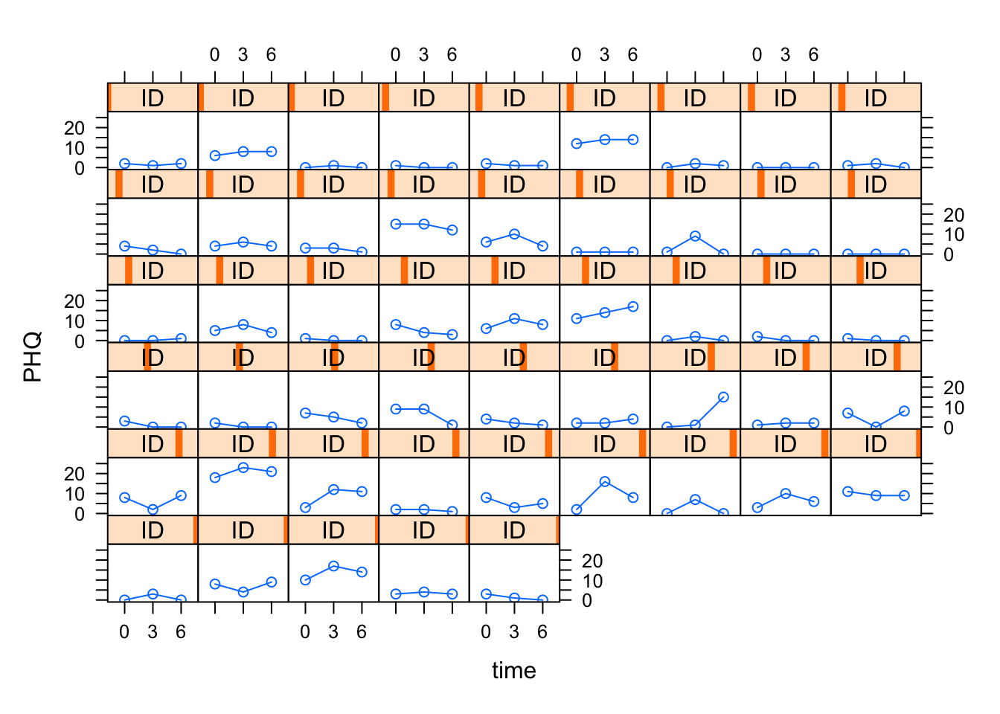

library(ggplot2)
library(lattice)
library(dplyr)
library(gridExtra)
library(brms)
library(bayesplot)An Analysis of Patient Mental Health during the COVID-19 Pandemic
Background
The coronavirus pandemic (COVID-19) and the associated lockdown measures brought a period of social changes that worsened the mental health of the general population. Many studies on this topic have determined that the mental health of the young adult population might have been particularly affected compared to other age-groups (middle-aged and elderly individuals). There are many common adaptive and nonadaptive coping strategies for dealing with the pandemic that have already been documented. In order to further understand the relative success of these coping strategies, it is necessary to further investigate these coping mechanisms in different age-groups systemically. This is a necessary step to determine which specific coping mechanisms led to an increase in patient mental health during the COVID-19 pandemic.
Dataset Overview
Study Type: Longitudinal Survey
Population: Lived in Japanese prefectures under special precautions that were related to the COVID-19 pandemic: Tokyo, Saitama, Chiba, Kanagawa, Osaka, Hyogo, Fukuoka, Hokkaido, Ibaraki, Ishikawa, Gifu, Aichi, and Kyoto
Timepoints: Three surveys were conducted: July 2020, September 2020 and January 2021
Response Variable: Patient Mental Health Questionnaire-9 (PHQ-9), a clinical diagnostic measure of mental health (score from 0-27), a higher score indicates more severe depression
Covariates: Demographic information (age, sex , residential areas, marital status, household-income, employment status, economically impact) , anger control scale (0-21, higher score indicates greater restraint of anger), state anger scale (0-30, higher scores represent higher anger), and coping strategy clinical sub-scale items from the Brief Coping Orientation Scale (Religion, substance use, use of instrumental support etc.).
Dataset size: 1468 patients, 23 covariates
Questions of Interest
How do changes in patient mental health over time during the COVID-19 pandemic differ between the three different age-groups (young adults (20-39), middle-aged adults (40-64) and older adults (65-79))?
How do general demographic characteristics (sex, financial stability, relationship status) play a role in influencing patient mental health?
Which coping mechanisms seem to be associated with an increase in patient mental health (quantified by a low PHQ score)
Exploratory Data Analysis
We first plot the PHQ scores against time for a random sample of 50 patients. From the following figure, we see that there is a high level of variation at the individual patient level.
# Sample 50 random id's
sample_ids <- sample(covid_phq$ID, 50)
# Plot
xyplot(PHQ ~ time | ID,
data= covid_phq[covid_phq$ID %in% sample_ids, ],
panel=function(x,y){
panel.xyplot(x, y, type = c("l", "p"))
}, ylim=c(-1, 28), as.table=T)
We can then plot a spaghetti plot stratified by the three different age groups.
covid_phq %>% group_by(time, AGE) %>%
mutate(mean= mean(PHQ), sd= sd(PHQ)) %>%
ungroup() %>%
ggplot(aes(x= time, y= PHQ, group = ID)) +
geom_line(alpha = 0.1) +
geom_point(alpha = 0.1, shape = 21) +
facet_grid(. ~ AGE) +
xlab("Month") + ylab("PHQ-9 Score") +
stat_summary(fun=mean,geom="line",lwd= 2,aes(group=1), colour = "blue") +
geom_linerange(alpha=0.03, mapping=aes(x=time, ymin=mean-sd, ymax=mean+sd), color="blue")+
theme(axis.title.y=element_blank()) + theme_bw()We do see a slight increasing trend of PHQ-9 scores over the three months in the young adult age-group (20-39) compared to the other two age-groups.
Next we can look at the relationship between the demographic variables and PHQ.
target_variables <- names(covid_phq[, c(4:11)])
my_plots_list <- lapply(target_variables, function(each_variable) {
ggplot(covid_phq, aes_string(each_variable, "PHQ")) + geom_boxplot() + theme_bw()
})
gridExtra::grid.arrange(grobs = my_plots_list)Although there are a lot of points beyond the quantile + IQR range, we do see some tentative trends: married people seem to have a relatively lower PHQ score, there may be a decreasing trend in PHQ score with an increase in Household income. A negative economic impact (2) also seems to have a higher PHQ score compared to the other two categories. Perhaps only residential areas seems like it may not have an impact on the PHQ score.
Finally we can look at the relationship between the item score variables and PHQ over time for 4 of the scale items (Humor, Substanceuse, Venting, and Anger Control). I did not take the time to code this more elegantly, and so generated one plot from one ggplot call instead of looping over the variables as I should have. I have the code for one variable displayed below and the final call to grid.arrange.
# Substance use
long1_Substanceuse <- covid_phq %>%
group_by(Substanceuse, time) %>%
summarise(mean = mean(PHQ), sd = sd(PHQ))
p1 <- long1_Substanceuse %>%
ggplot(aes(factor(Substanceuse), mean, group = time, colour = time)) + geom_line() + geom_point() +
theme_bw() + labs(y = "Mean PHQ Score", x = "Substance Use Score", colour = "Month")
# Arrange plots
grid.arrange(p1, p2, p3, p4, nrow = 2, ncol = 2)Overall, it seems as though substance score shows an increasing trend with the mean PHQ score. For both humour and venting score, either just the 3rd or both the 3rd and 6th show a decreasing trend with PHQ initially, while the PHQ score goes up again eventually in January. This is the effect of time, and averaging over time, these two scales show an overall decreasing trend. Anger Control does not necessarily seem to show any strong linear relation with the PHQ score.
Model
The response variable of interest is the PHQ score, which is a bounded, positive score from 0-27. We can take a look at the observed distribution of the response variable.
covid_phq %>%
ggplot(aes(x = PHQ)) +
geom_histogram(aes(y = ..density..),
colour = 1, fill = "grey") +
geom_density() + theme_bw()We see that there are a high-proportion of respondents with a score of 0, indicating that some sort of zero-inflated model would likely be a good fit in this case.
The PHQ-9 questionnaire contains 9 questions, each of which can obtain possible scores of 1, 2 and 3. Thus, the range of possible values falls between 0-27. One simple way to model these scores sticking with the traditional glm families could be to use a Poisson distribution, since we can think of the scores as aggregated counts. We could also potentially use a lognormal or a gamma distribution.
Another strategy is to think of each of the 27 possibilities of scores as 27 trials. A patient could thus theoretically have a chance to score a success (1) in each “trial”. This is akin to an aggregated Binomial sampling distribution, and additionally respects the bounded nature of the data in that 27 is the upper bound. Thus, we use a zero-inflated binomial model.
We use the {brms} package to fit a Bayesian Mixed Effects model. {brms} uses STAN as its backend, which uses the Hamiltonian Monte Carlo no-U turn sampler (HMC-NUTS). Through a Bayesian approach, we can specify weakly regularizing priors/informative priors when needed for our many coefficients since we will fit quite a few random effects and covariates. We can also obtain posterior distributions for the standard deviation of the random intercept, the coefficients of the age contrasts and so on for improved inference for our questions of interest.
Priors
priors <- c(prior(normal(0.3, 0.5), class = "b", coef = "AGE20M39"),
prior(normal(0.1, 0.5), class = "b", coef = "AGE40M64"),
prior(normal(0, 0.5), class = "b", coef = "AngerControl"),
prior(normal(-0.1, 1), class = "b", coef = "Venting"),
prior(normal(-0.1, 0.5), class = "b", coef = "Economically_impacted0"),
prior(normal(0.1, 0.5), class = "b", coef = "Economically_impacted2"),
prior(normal(0.1, 0.7), class = "b", coef = "time6:AGE40M64"),
prior(normal(0.1, 0.7), class = "b", coef = "time6:AGE20M39"),
prior(normal(0, 1), class = "b", coef = "time6"),
prior(normal(0, 1), class = "b", coef = "time3"),
prior(normal(0, 1), class = "b", coef = "time3:AGE40M64"),
prior(normal(0, 1), class = "b", coef = "time3:AGE20M39"),
prior(normal(0.1, 1), class = "b", coef = "StateAnger"),
prior(normal(0, 1), class = "b", coef = "SEX1"),
prior(normal(0, 1), class = "b", coef = "SelfBlame"),
prior(normal(0, 0.5), class = "b", coef = "Residential_areas1"),
prior(normal(0, 1), class = "b", coef = "Religion"),
prior(normal(0, 1), class = "b", coef = "Planning"),
prior(normal(-0.1, 0.7), class = "b", coef = "MARRIED2"),
prior(normal(-0.1, 0.7), class = "b", coef = "Humor"),
prior(normal(0.1, 0.7), class = "b", coef = "Employment_status1"),
prior(normal(0.1, 0.5), class = "b", coef = "Employment_status2"),
prior(normal(0.1, 0.5), class = "b", coef = "Employment_status3"),
prior(normal(-0.1, 0.7), class = "b", coef = "Household_income2"),
prior(normal(-0.1, 0.7), class = "b", coef = "Household_income3"),
prior(normal(-0.1, 0.7), class = "b", coef = "Household_income4"),
prior(normal(-0.1, 0.7), class = "b", coef = "Household_income5"),
prior(normal(-0.1, 0.7), class = "b", coef = "Activecoping"),
prior(normal(0, 1), class = "b", coef = "Substanceuse"),
prior(normal(-0.1, 0.7), class = "b", coef = "Useofinstrumentalsupport"),
prior(normal(-0.1, 0.7), class = "b", coef = "Positivereframing"),
prior(normal(-0.1, 0.7), class = "b", coef = "Useofemotionalsupport"),
prior(normal(0,4), class = "Intercept"),
prior(student_t(3,0, 1), class = "sd"),
prior(beta(2, 2), class = "zi"))This blog post led me to try and put somewhat informative priors on all the coefficients. For example, a \(\mathbb{N}(0.3,0.5)\) prior was put on the AGE20M39 contrast because in comparison to the reference level (AGE65M79), we have reasonable knowledge to believe that there would be an overall increase in the PHQ score. Weakly regularizing \(\mathbb{N}(0,1)\) priors were put on all the other coefficients for which there was no strong prior knowledge. A weakly informative student-t (3, 0, 1) prior was put on the random intercept, which is fairly permissive for large individual level variation. The z_i parameter models the proportion of zeroes, and the \(\text{Beta}(2, 2)\) is again a weakly informative prior over 0 and 1 that has a slightly shifted center away from 0.
Model Fitting
# Use the cmdstanr backend for Stan because it's faster
options(mc.cores = 4,
brms.backend = "cmdstanr")
fit2 <- brm((PHQ|trials(27) ~ time*AGE + SEX + MARRIED +
Residential_areas + Household_income + Employment_status +
Economically_impacted + Religion + Venting + Humor +
StateAnger + AngerControl + Behavioraldisengagement +
Planning + Acceptance + SelfBlame + Activecoping + Substanceuse + Useofinstrumentalsupport + Positivereframing + Useofemotionalsupport + (1|ID)), data= covid_phq,family = zero_inflated_binomial(), chains = 4, iter = 10000, warmup = 5000, prior = priors)We then fit the model with 4 chains using the {brms} package with the cmdstanr backend. The model fits reasonably quickly taking around 5 minutes for each chain.
Posterior Predictive and Convergence Checks
We can do a quick check to see if our model makes sense. We draw 100 simulated datasets from our posterior distribution and plot this against the observed distribution to see how well the posterior has captured the distribution. We do not see any major systematic discrepancies of the observed data from what can be predicted from the model.
pp_check(fit2, ndraws = 100) + theme_bw() + xlim(-2, 30)The model fit did not indicate any convergence issues and none of the \(\hat{R}\) values exceeded 1 significantly. None of the ratios of the effective sizes of all the covariates against the total sample size (\(\frac{N_{eff}}{N}\)) drop below 0.1 (the lowest drop to 0.5).
We can also look at the traceplots for some selected parameters to assess convergence. We seem to observe good mixing of the four chains.
color_scheme_set("mix-blue-pink")
posterior_chains <- as.array(fit2)
fargs <- list(ncol = 4, labeller = label_parsed)
pars <- c("zi", "sd_ID__Intercept", "b_Economically_impacted0", "b_Household_income2")
chains_trace <- mcmc_trace(posterior_chains, pars = pars, n_warmup = 300, facet_args = fargs)
chains_trace + theme_bw()Answering our questions of interest
Looking at the model summary, it is clear that a higher household income, working full-time (in contrast to not having a job), and being married seem to all be relatively associated with a lower PHQ score.
In terms of the coping strategies, venting, planning, the use of instrumental support and positive reframing seem to lead to a decrease in overall PHQ score, while use of emotional support, substance use, acceptance, self-blame, behavioural disengagement, higher anger and religion seem to be ineffective coping strategies, as they are associated with a higher PHQ score.
Finally, we do see a higher PHQ score associated with the younger age-groups, particularly young adults (20-39) relative to senior adults. We also see an interaction between age and the effect of time. In particular, relative to senior adults, young adults seem to have particularly high PHQ scores in month 6, while for middle-aged adults seem to have an increased PHQ score in month 3.
summary(fit2) Family: zero_inflated_binomial
Links: mu = logit; zi = identity
Formula: PHQ | trials(27) ~ time * AGE + SEX + MARRIED + Residential_areas + Household_income + Employment_status + Economically_impacted + Religion + Venting + Humor + StateAnger + AngerControl + Behavioraldisengagement + Planning + Acceptance + SelfBlame + Activecoping + Substanceuse + Useofinstrumentalsupport + Positivereframing + Useofemotionalsupport + (1 | ID)
Data: covid_phq (Number of observations: 4404)
Draws: 4 chains, each with iter = 10000; warmup = 5000; thin = 1;
total post-warmup draws = 20000
Group-Level Effects:
~ID (Number of levels: 1468)
Estimate Est.Error l-95% CI u-95% CI Rhat Bulk_ESS Tail_ESS
sd(Intercept) 1.12 0.03 1.07 1.18 1.00 3356 6445
Population-Level Effects:
Estimate Est.Error l-95% CI u-95% CI Rhat Bulk_ESS
Intercept -3.47 0.16 -3.78 -3.15 1.00 2242
time3 -0.10 0.05 -0.20 -0.01 1.00 6801
time6 -0.09 0.05 -0.18 0.00 1.00 6728
AGE20M39 0.75 0.10 0.56 0.95 1.00 1805
AGE40M64 0.47 0.09 0.30 0.64 1.00 2167
SEX1 0.06 0.07 -0.09 0.20 1.00 1708
MARRIED2 -0.56 0.08 -0.72 -0.40 1.00 1676
Residential_areas1 -0.04 0.06 -0.16 0.08 1.00 1895
Household_income2 -0.10 0.10 -0.30 0.11 1.01 1408
Household_income3 -0.25 0.11 -0.47 -0.04 1.01 1426
Household_income4 -0.18 0.13 -0.44 0.08 1.00 1394
Household_income5 -0.24 0.13 -0.48 0.01 1.00 1694
Employment_status1 0.45 0.12 0.22 0.67 1.00 1745
Employment_status2 0.29 0.10 0.10 0.50 1.00 1896
Employment_status3 0.24 0.08 0.08 0.40 1.00 1674
Economically_impacted0 0.04 0.17 -0.30 0.38 1.00 2528
Economically_impacted2 0.45 0.07 0.32 0.58 1.00 1529
Religion 0.03 0.01 0.01 0.05 1.00 8075
Venting -0.03 0.01 -0.06 -0.01 1.00 11229
Humor -0.01 0.01 -0.03 0.02 1.00 9397
StateAnger 0.05 0.00 0.04 0.05 1.00 7957
AngerControl 0.01 0.00 0.00 0.01 1.00 11824
Behavioraldisengagement 0.06 0.01 0.04 0.09 1.00 11040
Planning -0.05 0.01 -0.07 -0.02 1.00 11225
Acceptance 0.03 0.01 0.01 0.05 1.00 10782
SelfBlame 0.09 0.01 0.07 0.11 1.00 9544
Activecoping -0.01 0.01 -0.04 0.01 1.00 13577
Substanceuse 0.03 0.01 0.01 0.05 1.00 7217
Useofinstrumentalsupport -0.03 0.01 -0.05 -0.00 1.00 11843
Positivereframing -0.03 0.01 -0.05 -0.01 1.00 11955
Useofemotionalsupport 0.03 0.01 -0.00 0.05 1.00 10590
time3:AGE20M39 0.05 0.06 -0.07 0.18 1.00 7713
time6:AGE20M39 0.15 0.06 0.03 0.27 1.00 7648
time3:AGE40M64 0.17 0.06 0.06 0.29 1.00 7402
time6:AGE40M64 0.07 0.06 -0.04 0.18 1.00 7459
Tail_ESS
Intercept 5168
time3 10511
time6 10977
AGE20M39 4235
AGE40M64 4550
SEX1 3638
MARRIED2 3525
Residential_areas1 4426
Household_income2 3086
Household_income3 3279
Household_income4 3354
Household_income5 3836
Employment_status1 3385
Employment_status2 3338
Employment_status3 3874
Economically_impacted0 4927
Economically_impacted2 3678
Religion 11857
Venting 13973
Humor 14094
StateAnger 12192
AngerControl 14575
Behavioraldisengagement 14177
Planning 13869
Acceptance 14400
SelfBlame 13232
Activecoping 14980
Substanceuse 11292
Useofinstrumentalsupport 13633
Positivereframing 14565
Useofemotionalsupport 14274
time3:AGE20M39 11930
time6:AGE20M39 12052
time3:AGE40M64 11562
time6:AGE40M64 11850
Family Specific Parameters:
Estimate Est.Error l-95% CI u-95% CI Rhat Bulk_ESS Tail_ESS
zi 0.03 0.00 0.02 0.04 1.00 18550 14388
Draws were sampled using sample(hmc). For each parameter, Bulk_ESS
and Tail_ESS are effective sample size measures, and Rhat is the potential
scale reduction factor on split chains (at convergence, Rhat = 1).Plotting our results
library(tidybayes)We can use the {tidybayes} package to visualize our results.
TBD
Notes
Something that could be added to this analysis is more rigorous model selection and checks. Ideally, we should have compared this full model (which is relatively over-parameterized) with a reduced model after removing coefficients in a step-wise manner through K-fold cross-validation. We can also separately model the zero-generating proportion with covariates, as well as specifically assess the young adult population to look at which coping mechanisms were successful for them in particular.
References
Fukase et al., 2022. Age-related differences in depressive symptoms and coping strategies during the COVID-19 pandemic in Japan: A longitudinal study
Paul-Christian Bürkner (2017). brms: An R Package for Bayesian Multilevel Models Using Stan. Journal of Statistical Software, 80(1), 1-28. doi:10.18637/jss.v080.i01
Paul-Christian Bürkner (2018). Advanced Bayesian Multilevel Modeling with the R Package brms. The R Journal, 10(1), 395-411. doi:10.32614/RJ-2018-017
Paul-Christian Bürkner (2021). Bayesian Item Response Modeling in R with brms and Stan. Journal of Statistical Software, 100(5), 1-54. doi:10.18637/jss.v100.i05
Gabry J, Simpson D, Vehtari A, Betancourt M, Gelman A (2019). “Visualization in Bayesian workflow.” J. R. Stat. Soc. A_, 182, 389-402. doi: 10.1111/rssa.12378 (URL: https://doi.org/10.1111/rssa.12378).
Kay M (2023). tidybayes: Tidy Data and Geoms for Bayesian Models. doi: 10.5281/zenodo.1308151 (URL: https://doi.org/10.5281/zenodo.1308151), R package version 3.0.4, <URL: http://mjskay.github.io/tidybayes/>.